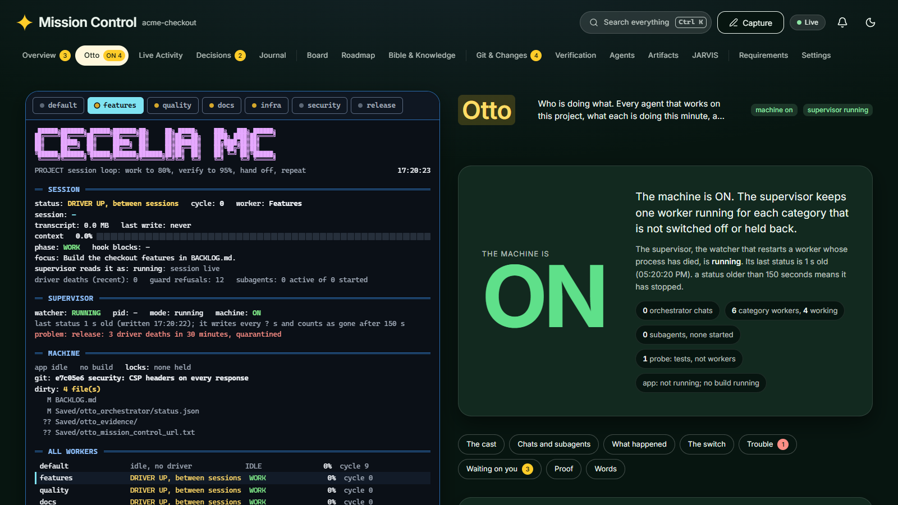
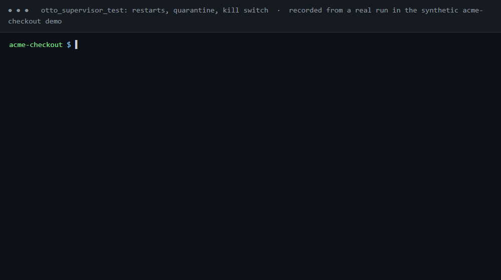
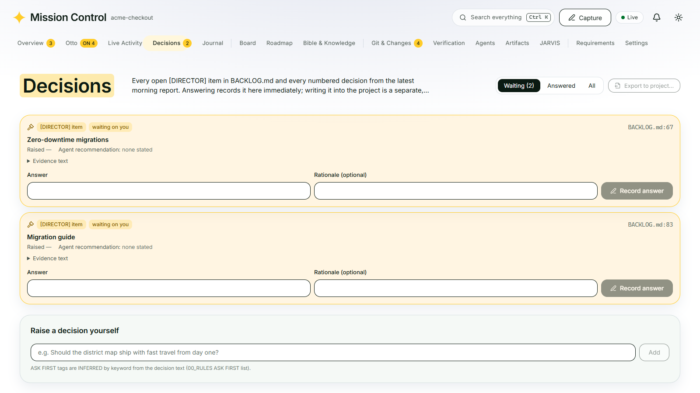
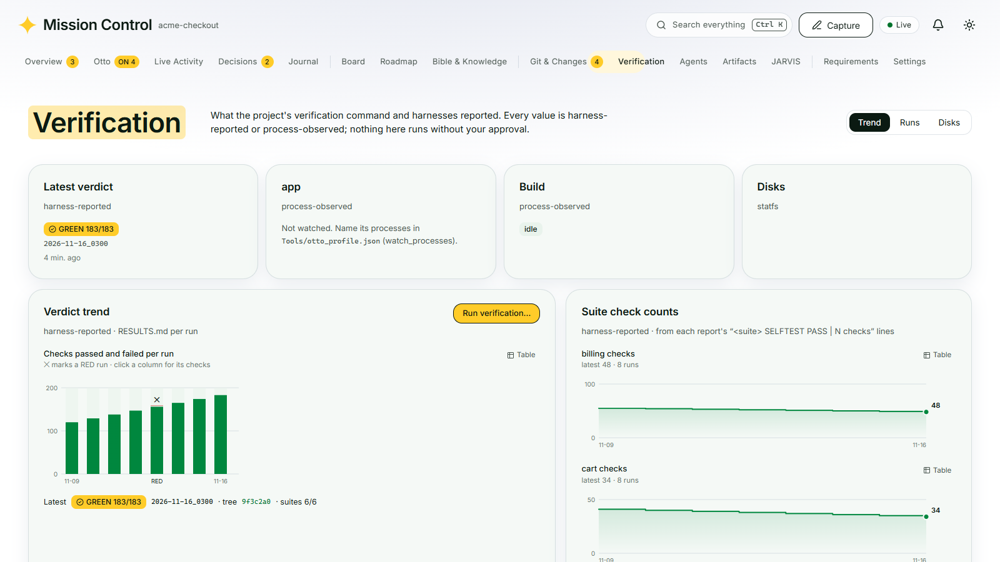
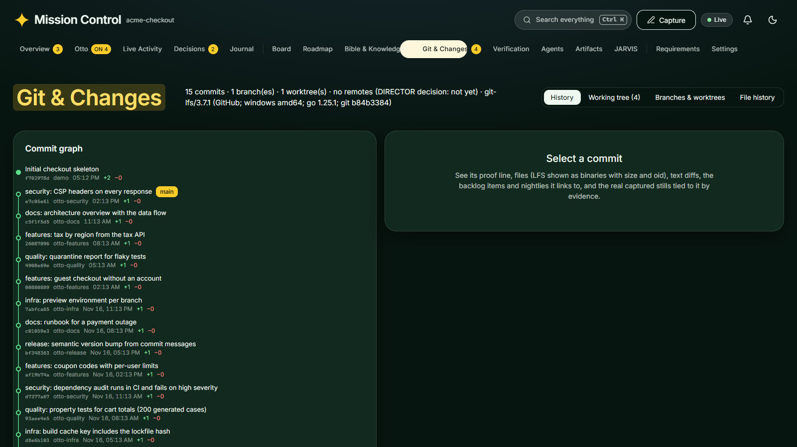
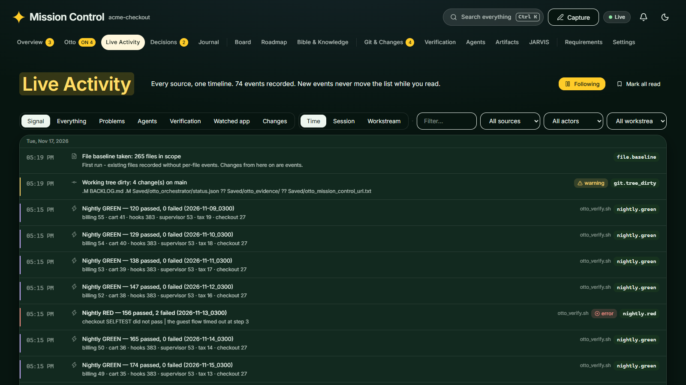

Mission Control
factory board · 3 lanes live · machine ONCODE · lane Aworking
CODE · lane Bworking
BUILD · exactly 1proving
ASSET · exactly 1queued
OTTO runs unattended AI dev sessions under rules, locks, a guard, a supervisor and a kill switch, then makes every session prove its work instead of claiming it.
# start the machine otto_ctl status Turn it ON otto_ctl on # every session ends with proof 383 / 383 guard decisions 53 / 53 supervisor checks 43 / 43 Mission Control tests
OTTO was not designed on a whiteboard. It was extracted from the automation behind an agent-built Unreal Engine game: about 109k lines of code in 26 days.
The loop, supervisor and guard that ran the game's AI sessions were called Cecilia. She worked for days at a time with no end in sight, which is exactly why the guard, the kill switch and the proof gate exist.
A command center built to watch the factory run: who is doing what, what is waiting, what is failing and what has proof. Its home page became the OTTO factory board.
The engine, game and project names were stripped out, and Mission Control was ported by hand. What remained is OTTO: it runs on any project, not only a game.
Recorded from OTTO running in a synthetic demo project (invented work, real OTTO files).









OTTO is a control plane around the claude -p CLI. It does not trust agents. It gives them rules, boundaries and a way to prove they finished.
Decide, don't ask. Six ask-first items. Stop conditions. Proof, or it didn't happen.
Unlimited READ, many CODE lanes each on its own checkout, exactly one ASSET and exactly one BUILD at a time.
A hook outside the agent's control enforces ownership, per-path checkouts, locks and bounded delegation, with its own regression suite.
A session works to about 80% of its context, verifies to about 95%, rewrites its own handoff prompt, and restarts fresh.
One marker file stops the machine. Only the control command removes it, and the supervisor restores it if a worker deletes it.
One verification command, one verdict, one evidence folder. Cost is logged per session, with no invented prices.
The home page is the factory board: machine state, tasks done, workers up, gates green, and what is waiting on you. Each lane has its own character card, with a feed for Waiting, Trouble, Proof and Cost.
Every write to the project is a gated action with a diff, lock checks and a commit.
Each project gets a stable port in 4720-4799 and its own data directory.
No Node? A zero-dependency, read-only, localhost-only view runs from a single file.
OTTO is built on the idea that claims need evidence, so this page says plainly what is done and what is not.
383/383 hook decisions. 53/53 supervisor recovery checks. 43/43 Mission Control tests. Fresh deploys into empty folders. Database upgrade with automatic backup.
One lane, supervised, for a few hours. Then widen it.
OTTO leaves the machine OFF, never overwrites a file without -Force, and never commits, pushes or starts anything on its own.